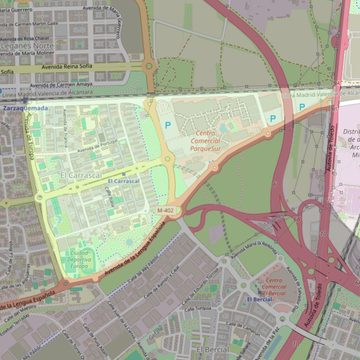

Nuestra Señora del Carrascal
- Arciprestazgo
- Leganés
- Población
- Leganés
- Dirección postal
- Avda. de Portugal, 23
- Código postal
- 28916
- Extensión
- 1,39 km² (139 ha)
- Teléfono
- 916 903 276
- Correo electrónico
- nscarrascal-leganes@diocesisgetafe.es


Descargar mapaLímites según decreto
"Partiendo de la Avda. de Europa en su confluencia con la carretera provincial Leganés-Villaverde, siguen por dicha carretera en dirección Este, hasta su intersección con los términos municipales de Madrid-Leganés, y por dichos términos municipales en dirección Norte, hasta encontrar el ferrocarril Madrid-Cáceres; continúan por las vías de dicho ferrocarril en dirección Noroeste, hasta la altura de la Avda. de Europa, siguiendo por dicha Avda. en dirección Oeste hasta su confluencia con la carretera provincial Leganés-Villaverde, punto de partida" (Decreto de erección de 20-12-82)